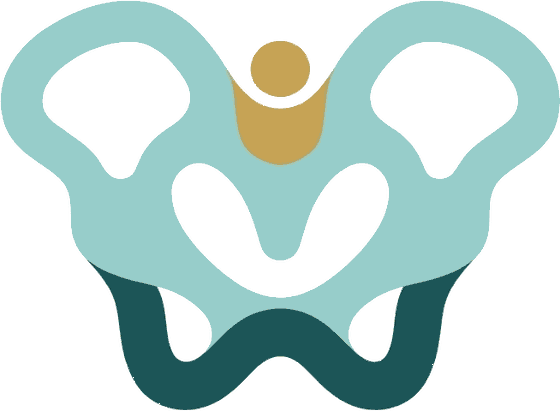

Dor no quadril
As causas mais comuns, o que pode ser, quando se preocupar e os sinais que pedem atenção.
Investigar a dorGuia de saúde do quadril · Curitiba
Prótese, artroscopia, artrose e recuperação explicadas em linguagem simples e baseadas em evidência — para você decidir bem, ao lado do seu médico.

Aprofunde por tema
Se preferir, comece pelo atalho que descreve o seu momento. Cada página responde, em detalhe, às dúvidas mais comuns de quem está passando por aquilo.
As causas mais comuns, o que pode ser, quando se preocupar e os sinais que pedem atenção.
Investigar a dorSintomas, graus e tratamento da artrose do quadril — do conservador ao momento de operar.
Entender a coxartroseO que funciona, o que funciona pouco e o que não tem evidência: exercício, peso, remédios, colágeno e suplementos.
Ver o que aliviaO que é a artroplastia, tipos de prótese, durabilidade, riscos e expectativa de longo prazo.
Ler sobre próteseSUS, plano de saúde e particular: as faixas de valores no Brasil e o que entra na conta, com dados de estudos.
Ver os custosA linha do tempo fase a fase: o que pode e o que não pode, quando dirigir, trabalhar e dormir de lado.
Ver recuperaçãoDói na lateral e não dá para dormir daquele lado? Na maioria das vezes não é bursite: é tendinite dos glúteos, e isso muda o tratamento.
Entender a dor lateralCaiu e não consegue apoiar a perna? Por que quase sempre se opera, em quanto tempo, como é a recuperação e o que a família pode fazer.
Entender a fraturaA articulação do quadril fica atrás da virilha, e não na lateral. Por que a artrose dói ali, e como diferenciar de hérnia, adutores e coluna.
Entender a dor na virilhaImpacto femoroacetabular e lesão do labrum no quadril jovem. Quando a cirurgia resolve, e por que artrose muda tudo na indicação.
Ler sobre artroscopiaSão onze artigos longos, com as fontes citadas. Vá direto ao assunto pelo buscador, ou percorra a biblioteca inteira.
O quadril é uma articulação do tipo bola e soquete: a cabeça do fêmur (a bola, no topo do osso da coxa) encaixa no acetábulo (o soquete, na bacia). Uma cartilagem lisa reveste as duas superfícies e permite o movimento sem dor. Quando essa cartilagem se desgasta ou a articulação é danificada por doença ou trauma, surgem dor e rigidez — e é aí que a cirurgia pode entrar.
Cirurgia do quadril é um termo amplo. Inclui desde procedimentos que preservam a articulação, como a artroscopia, até a substituição completa por uma prótese (a artroplastia). A escolha depende da causa, da idade, do nível de atividade e do quanto a dor afeta a vida da pessoa.
Várias condições podem danificar o quadril. As mais comuns:
Nem tudo que dói no quadril vem de dentro da articulação, e essa é uma confusão frequente. A dor na lateral, que piora ao deitar daquele lado, quase sempre é bursite ou tendinite dos tendões glúteos, um problema que raramente precisa de cirurgia e que tem tratamento com boa evidência.
Um ponto importante e que tranquiliza muita gente: a maior parte das dores no quadril não precisa de cirurgia. O caminho começa pelo tratamento conservador — medicação para dor, fisioterapia, controle do peso e ajuste de atividades. A cirurgia costuma ser considerada quando:
Quem decide, sempre, é você junto do seu ortopedista, depois de avaliar o exame e as imagens. Não existe resposta única: o mesmo desgaste pode incomodar muito uma pessoa e pouco outra.
Alguns sintomas pedem avaliação médica sem demora, principalmente em idosos ou após queda:
As principais modalidades atendem a perfis diferentes de paciente:
Sobre as vias de acesso (anterior e posterior), há muita discussão. A literatura atual não mostra superioridade definitiva de uma sobre a outra: ambas oferecem bom alívio da dor e recuperação da marcha em poucas semanas, com taxas de complicação baixas e comparáveis. O mais importante é a experiência da equipe com a técnica que utiliza.
Entender a jornada reduz a ansiedade. De forma resumida, ela costuma seguir estas etapas:
A cirurgia do quadril, em especial a prótese, está entre as operações de maior sucesso da medicina: a grande maioria dos pacientes tem alívio importante da dor e melhora da mobilidade e da qualidade de vida. Por outro lado, como toda cirurgia de grande porte, tem riscos que merecem ser conhecidos: infecção, trombose, luxação da prótese, lesão de nervo ou vaso, e, a longo prazo, desgaste ou afrouxamento do implante. Esses riscos são, em geral, baixos, e boa parte é prevenível com cuidados antes, durante e depois. Conversar abertamente sobre eles com o cirurgião faz parte de uma boa decisão.
Na hora de escolher quem vai operar, vale pesquisar a formação, a experiência e a reputação do profissional, além do hospital onde a cirurgia será realizada. Sinta-se à vontade para perguntar quantos procedimentos a equipe realiza, quais as taxas de complicação do serviço e o que esperar da recuperação. Um bom cirurgião explica com clareza e respeita suas dúvidas.
Leitura recomendada
A ciência do quadril, traduzida para quem não é médico.
Um estudo acompanhou 346 pacientes por 5 anos. Veja o que mudou na dor e na qualidade de vida de quem operou.
Ler o artigo →A revisão Cochrane de 2026 comparou os tipos de exercício e não achou vencedor. Veja o que a evidência sustenta e o que não sustenta.
Ler o artigo →SUS, convênio e particular: as faixas reais de valores no Brasil, com dados de dois estudos científicos brasileiros.
Ler o artigo →Cirurgiões de quadril em Curitiba
Este site reúne informação para pacientes e mantém um espaço de indicação de cirurgiões de quadril em Curitiba. É um cirurgião que cuida da articulação e quer aparecer aqui? Escreva para curitibaquadril@gmail.com.
Prefere abrir direto? Escrever pelo Gmail ou usar o app de e-mail.
Indicação gratuita e sem fins comerciais. Cada profissional é responsável pela própria publicidade perante o CFM.
Perguntas frequentes
Em geral, quando a dor é intensa, não melhora com remédios e fisioterapia e atrapalha dormir, trabalhar ou caminhar. A decisão é individual e tomada com o ortopedista, após avaliar exame e imagens.
Não. A maioria das causas de dor no quadril é tratada sem cirurgia. A operação entra quando o tratamento conservador não resolve.
As próteses modernas têm alta durabilidade, com sobrevida acima de 95% em 10 anos e acima de 80% em 25 anos em estudos de acompanhamento. Muitas duram a vida toda. Veja mais na página de prótese.
Sim. O SUS realiza cirurgia de prótese de quadril, normalmente em hospitais de referência, mas costuma haver fila de espera conforme a gravidade do caso e a disponibilidade de leitos.
A artroplastia de quadril consta no rol da ANS e, havendo indicação médica, a cobertura da cirurgia, dos materiais e da internação é obrigatória pela Lei dos Planos de Saúde.